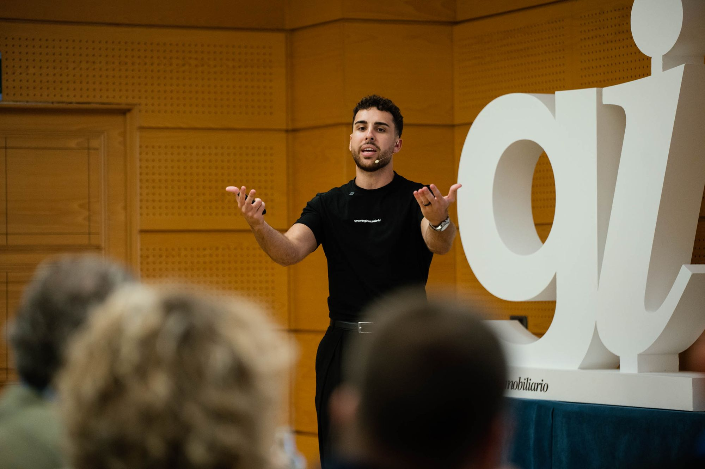
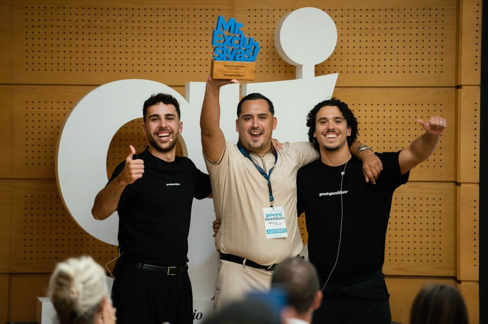
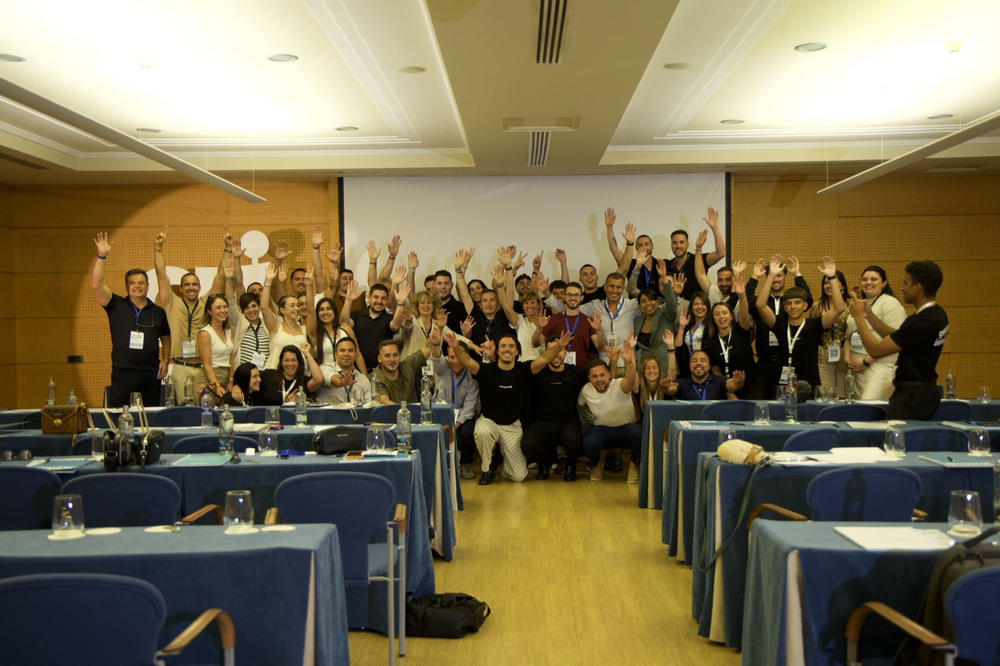
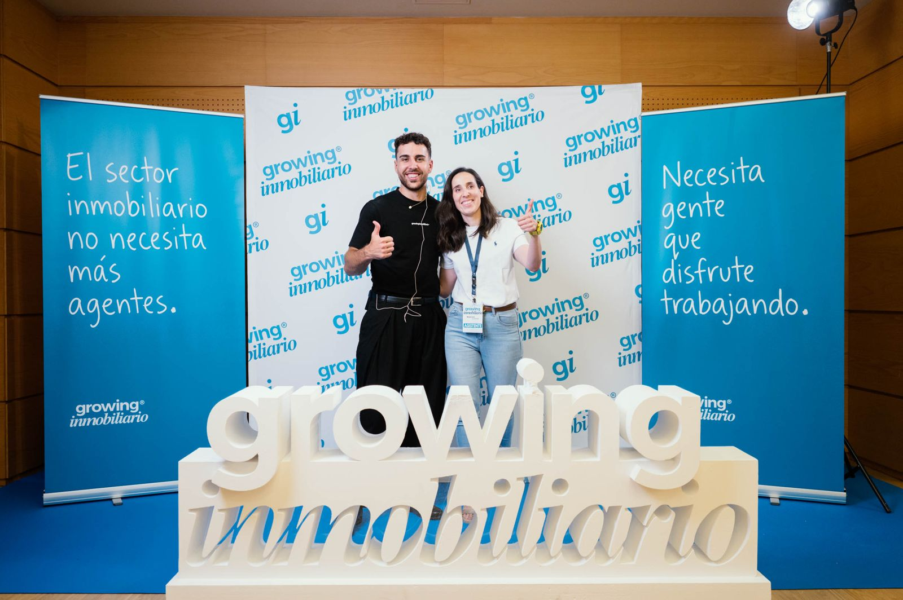
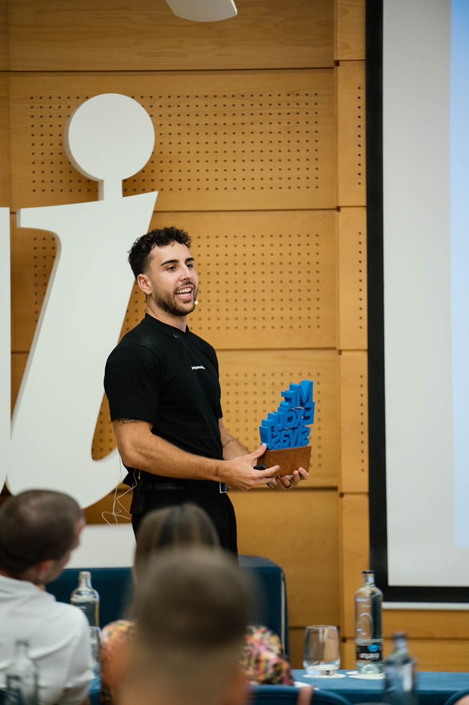

Así convierte mi equipo un «me lo tengo que pensar» en una exclusiva firmada antes de levantarse del sofá. Las conversaciones reales de mis entrenamientos, paso a paso y frase a frase.
Me ha gustado mucho, pero me lo tengo que pensar.


Todo lo que vas a ver lo he probado primero en mi propia agencia, Atrio, en Mallorca. Grabábamos cada visita de captación y la repasábamos a primera hora, frase por frase, hasta que la exclusiva dejó de depender de la suerte.
Hoy, con Growing Inmobiliario, enseño ese mismo sistema a agentes y agencias de toda España: cómo captar, cómo llevar la visita y cómo resolver las objeciones sin bajar el precio ni los honorarios. Cada semana lo entrenamos en directo.


En casi todas las visitas de captación que reviso pasa lo mismo: el agente fluye en el cierre, no aísla cada objeción y deja la decisión en el aire. Y lo que queda en el aire no se firma.
¿Habría algún problema para dejarlo firmado ahora?
Me parece todo bien, déjame darle una vuelta.
Claro, sin problema. ¿Hablamos mañana?
Todas las objeciones caen en uno de estos cuatro grupos, y el ciclo para resolverlas es siempre el mismo. Toca un grupo para ir a sus objeciones.
«Entiendo que me lances esta objeción.»
«¿Es la única que tenemos o hay alguna más?»
Da igual que sea la exclusiva, los honorarios o el precio. Cada objeción se trata igual: valido, aíslo, descubro qué hay detrás, precierro con un condicional, lo hago ver con una historia y cierro. Si sale otra, vuelta a empezar hasta que esté hermético.
Toca cada numeral para ver la frase exacta
Con la primera objeción, sea cual sea, no resuelvas nada todavía. Primero llévale al resultado: «¿Sientes que puedo conseguirte el resultado que buscas?». Si dice que sí, «¿por qué?». Y cuando ya habla bien de ti: «Entonces, ¿qué nos impide dejarlo firmado ahora?». Ahí sale la objeción real, y con esa empieza el ciclo.
A la izquierda, lo que hago y por qué. A la derecha, el salón y el guion de la conversación tal cual, sacados de los entrenamientos en directo con agentes y agencias.
La gente no huye de la exclusiva. Huye de sentirse atada. Las objeciones son siempre tres, y si las tienes resueltas por escrito el propietario no tiene nada que «pensarse». Abre cada cláusula.
Pásale a la IA las transcripciones de tus captaciones y tu contrato y pídele que meta en el encargo las objeciones de exclusiva que más te salen. Vas diez pasos por delante de tu competencia.
La oferta más fuerte del mercado quita el riesgo al propietario. Un ejemplo agresivo: «si en tres meses no la vendo, te la compro». Las condiciones del contrato dicen qué tiene que pasar para que se cumpla.
El precio es percepción de valor. Y si bajas honorarios, que sea solo a cambio de firmar ahora.
Las tres cosas que siempre teme el propietario, resueltas antes de firmar
Cinco situaciones reales de visita. Elige la respuesta que darías sentado en ese salón y mira por qué funciona o por qué no.

Lo que has leído aquí lo entreno cada semana en un directo gratuito con agentes y dueños de inmobiliaria: objeciones reales, roleplays y preguntas en directo. No tienes que volver a registrarte. Entra en el grupo de WhatsApp y el mismo miércoles te paso ahí el enlace de la sala.